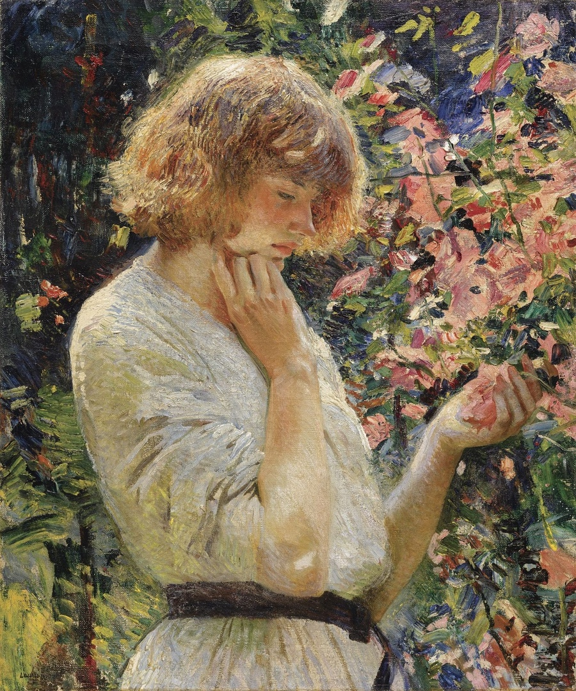

12 октября 2022, 23:30
Британская художница Лора Найт рисовала мальвы в своем саду на заднем дворе, когда жила в Корнуолле. Она и ее муж Гарольд работали в округе и были членами местных художественных сообществ. Картина считается шедевром британского импрессионизма, с ее яркими красками и густыми, бесстрастными мазками. Молодая женщина в белом летнем платье с узким черным поясом стоит в профиль. Окруженная высокими цветами, яркий свет жаркого солнца освещает ее золотисто-рыжие волосы. Она держит в руке один из цветков, задумчиво глядя вниз. Создавая картину на природе, художница приравнивает красоту девушки к мальвам. Когда Найт впервые встретилась с моделью Долли, она сделала похожее сравнение. В своей автобиографии она написала: "Вернувшись домой, мы обнаружили модель, ожидающую нас в нашем саду. Она сама выглядела подсолнухом среди подсолнухов. Я сразу же наняла ее."
ПодробнееЛора Найт / Мальва, ? г.